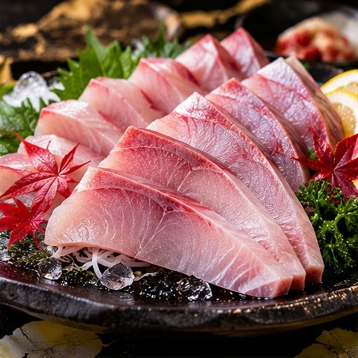

SIGNATURE MENU
겨울 제철 대방어회

대방어회 안내
포항 영일대 겨울 대방어회
영일대횟집과 함께 계획하기
겨울철 방어회를 찾는 분들을 위한 메뉴 안내입니다. 계절에 따라 판매 여부와 구성이 달라질 수 있으므로 방문 전에 확인해 주세요.
영일대횟집 방문 정보
포항 영일대해수욕장 인근에서 자연산회, 대게, 물회와 해산물 메뉴를 안내합니다. 가게 앞 주차 및 맞은편 두무치 공영주차장을 참고해 주세요. 단체모임은 인원과 메뉴를 미리 문의해 주세요.
예약하기네이버 플레이스전화 문의